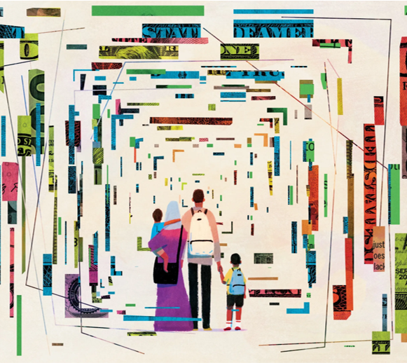

Bridges to Dignity
Bridges of Dignity is a programme dedicated to improving how people view migration and showcasing the positive contributions that migrants make to our society, both socially and economically. Our aim is to fight against prejudice and tackle the root causes of mistrust based on negative stereotypes and fear.
At Bridges of Dignity, we're on a mission to connect hearts and open minds. Our projects take you on an adventure to discover what makes us all unique and yet so alike. It's about getting to know different people and their ways of life,and learning something new that makes you think, "Wow, I never knew that!" We're here to shake up the way you see the world and touch your heart with stories that really mean something. Every project we do builds a bridge to understanding and caring for each other a little more. So, come along with us! It's a journey that'll change the way you look at yourself and others—making dignity a real thing for everybody. Let's make an impact, together.
Through a series of interactive activities and collaboration, this programme strives to not only shift perceptions but also develop improved approaches for reaching and supporting individuals and organisations that share the same goal of changing collective attitudes toward migration.
The dreams of yesterday are the hopes of today and the reality of tomorrow.
Bridges to Care
Migrants often lack the support systems they need to develop safety and resilience, putting them at risk of being taken advantage of, feeling isolated, and experiencing a rapid decline in their well-being. Local services that are designed for the native population often don't meet the unique needs and situations of migrants. Through our programmes, we step in where others may lack the expertise, ensuring that migrants don't fall through the cracks or fall vulnerable to exploitation, loneliness, and worsening conditions because of inaccessible services.
 To go places and do things that have never been done before –
that’s what living is all about.
To go places and do things that have never been done before –
that’s what living is all about.
Our team is made up of individuals who have faced similar challenges, and we are strongly committed to ensuring that migrants get the protection and help they deserve
Our approach is comprehensive and looks at the needs of migrants holistically, aiming to connect support with the relevant services in their communities for comprehensive package of care and protection. In this way, we provide support to our partner organisations, helping them to effectively support fellow migrants while ensuring they are not in disadvantage.